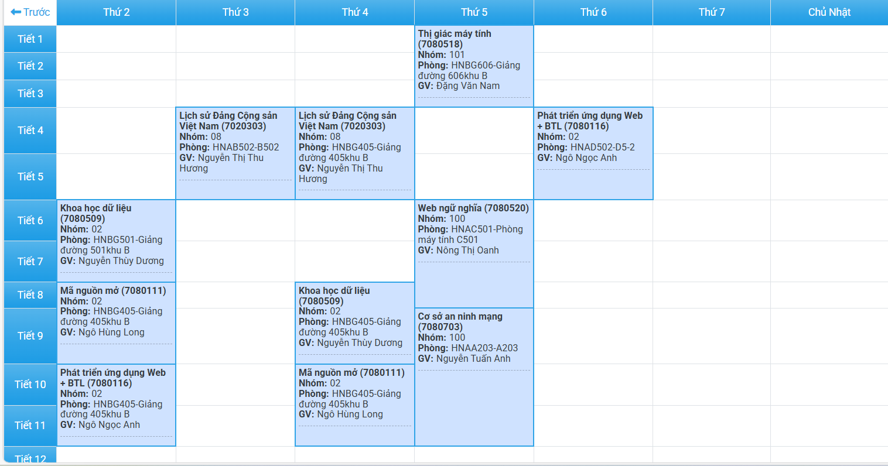

ĐÂY LÀ NỘI DUNG TRANG WEB
đây là thẻ phân đoạn p
đây là thẻ span
đây là thẻ div
đây là thẻ h1
đây là thẻ h2
đây là thẻ h3
lớp PTUDWEB + BTL
nhóm 02
đây là thẻ b
đây là thẻ i
đây là thẻ u
đây là thẻ font có chữ màu đỏ
đây là thẻ font có phông chứ verdana
đây là thẻ font có size là 10
đây là thẻ font vs 3 yếu tố
x2
H2O

đây là đường dẫn đến trang humg
đi đến bài 2